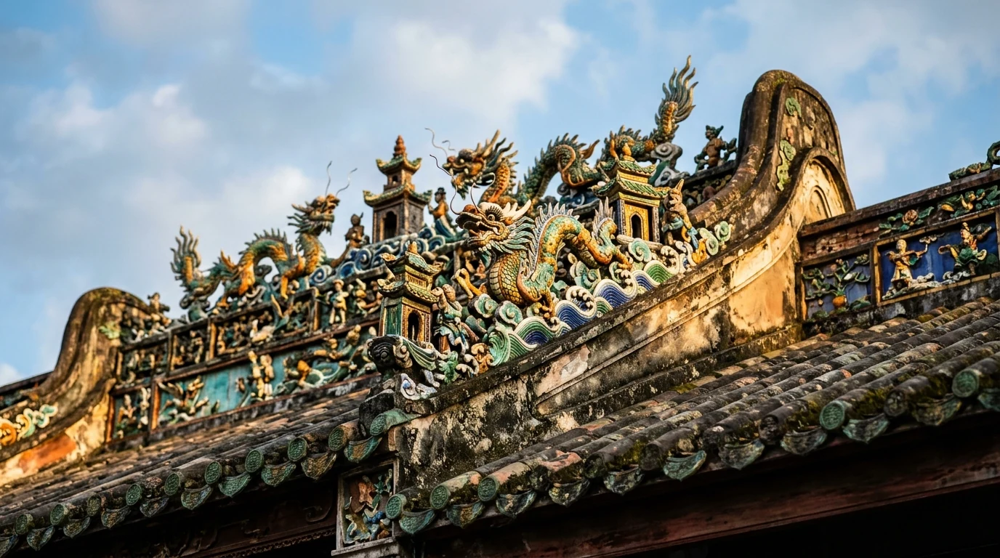

🧭 1. Tổng Quan Chùa Bà Thiên Hậu — Hồn Cốt Di Sản Chợ Lớn 1760
Ngôi miếu được nhóm cư dân người Hoa gốc Quảng Đông (vùng Tuệ Thành – Quảng Châu) định cư lập nghiệp tại vùng Đề Ngạn – Chợ Lớn góp công xây dựng vào khoảng năm Canh Thân 1760 để tỏ lòng biết ơn Thiên Hậu Thánh Mẫu (Lâm Mặc Nương) đã che chở thuyền buôn vượt sóng biển bình an đến đất lành phương Nam, đồng thời làm hội quán gắn kết tương thân tương ái trong cộng đồng. Trải qua các đợt trùng tu lớn vào các năm 1800, 1842, 1882, 1890 và 1916, công trình đã được Bộ Văn hóa – Thông tin xếp hạng Di tích Kiến trúc Nghệ thuật cấp Quốc gia theo Quyết định số 43-VH/QĐ ngày 07/01/1993. Theo Nghị quyết 1685/NQ-UBTVQH15 năm 2025, địa chỉ di tích nay thuộc phường Chợ Lớn, TP. Hồ Chí Minh.
Công trình mang bố cục cổ điển kiểu Nội công ngoại quốc / Tứ hợp viện gồm bốn nếp nhà liên hoàn (Tiền điện, Trung điện, Chính điện và Hậu điện) ngăn cách bởi các khoảng sân giếng trời gọi là Thiên Tỉnh giúp đón nắng gió và thoát khói hương tự nhiên. Giá trị mỹ thuật đỉnh cao của hội quán nằm ở hệ thống hàng trăm tiểu tượng và phù điêu gốm men nhiều màu trên bờ nóc do hai lò gốm cổ nổi tiếng Bửu Nguyên và Đồng Hòa chế tác năm 1908, cùng kho tàng hơn 400 hiện vật cổ từ thế kỷ XVIII–XX như Đại hồng chung đúc năm Càn Long thứ 60 (1795–1796), bộ lư phát lam năm Gia Khánh thứ 5 (1800), thuyền gỗ chạm rồng và hàng chục bức hoành phi, bia đá cổ.
📜 2. Nghi Thức Dâng Nhang Vòng & Văn Hóa Hành Lễ Văn Minh
Tuệ Thành Hội Quán là di tích kiến trúc gỗ – đá – gốm sứ cổ có mật độ khách hành hương trong và ngoài nước rất cao. Ban Quản trị Hội quán duy trì quy tắc hành lễ cực kỳ văn minh, trật tự:
🏮 3 Quy Chuẩn Cốt Lõi Khi Chiêm Bái Chùa Bà Thiên Hậu
🕯️ Dâng Đúng Số Nén Hương Quy Định
Mỗi khách hành lễ chỉ thắp số lượng nhang nhỏ vừa đủ cắm vào các lư đồng lớn tại khu vực Thiên Tỉnh theo hướng dẫn của Ban Quản trị, hoặc đăng ký treo nhang vòng có người nhà miếu treo lên giàn cao an toàn.
📵 Giữ Gìn Không Gian Tôn Nghiêm Nội Điện
Mặc trang phục lịch sự kín đáo; lưu ý tuân thủ các biển hướng dẫn khu vực hạn chế quay phim/chụp ảnh cận diện trong Chính điện để tránh ảnh hưởng tới người đang thành tâm lễ bái.
🏺 Bảo Vệ Hơn 400 Cổ Vật Thế Kỷ XVIII–XIX
Tuyệt đối không sờ tay, không gõ vật cứng vào chuông đồng năm 1796, lư trầm năm 1800, mô hình thuyền gỗ cổ và các bức chạm đá – chạm gỗ sơn son thếp vàng.
⛩️ 3. Lộ Trình 6 Trạm Cổ Miếu Chợ Lớn & Chánh Niệm
Lộ trình 6 trạm dẫn bước từ bờ nóc gốm cổ ngoài Tiền điện, vào giếng trời Thiên Tỉnh rủ nắng khói trầm, chiêm ngưỡng chuông cổ 1796 & thuyền rồng, đảnh lễ Thiên Hậu Thánh Mẫu, viếng gian Long Mẫu – Tài Bạch và ghi thẻ hồng điều ước nguyện.
Hành Trình Chiêm Bái Chùa Bà Thiên Hậu — Chợ Lớn 1760
Cảm nhận trọn vẹn nhịp sống tâm linh nhân hậu và tinh hoa gốm cổ hơn hai thế kỷ rưỡi giữa lòng Sài Gòn – Chợ Lớn.

Ngay từ khoảng sân trước nhìn lên mái ngói âm dương Tiền điện, du khách đã choáng ngợp trước quần thể phù điêu và hàng trăm tiểu tượng gốm men xanh ngọc, vàng hổ phách, lam chàm do hai lò gốm cổ Bửu Nguyên và Đồng Hòa tạo tác năm Mậu Thân (1908), tái hiện hình tượng Lưỡng long tranh châu, cá chép hóa rồng, bát tiên và các điển tích nhân nghĩa cổ.
🏺 Góc Ngắm Nghệ Thuật Gốm Cổ Đẹp Nhất
- Đứng từ sân ngoài Tiền điện và ngước lên từ sân giếng trời bên trong để thấy rõ hai lớp bờ nóc gốm men lấp lánh dưới nắng.
- Hai bên cửa chính Tiền điện có ban thờ Phúc Đức Chính Thần (Ông Bổn / Thổ Địa) và Môn Quan Vương Tả.
- Bước qua ngưỡng cửa đá hoa cương nhẹ nhàng, không đứng chắn lối ra vào.
🎨 Dấu Ấn Lò Gốm Bửu Nguyên – Đồng Hòa Xưa
- Đầu thế kỷ XX, vùng Sài Gòn – Chợ Lớn – Cây Mai nổi danh khắp Nam Kỳ với dòng gốm kiến trúc trang trí đình miếu chịu nắng mưa hàng trăm năm không phai màu men.
- Từng nhân vật nhỏ chỉ cao một gang tay nhưng có nét mặt, tà áo, chiến mã sống động như thật.
- Sự kết hợp hài hòa giữa kiến trúc Lĩnh Nam và mỹ cảm bản địa phương Nam.
CHỨNG NHẬN CHIÊM BÁI TUỆ THÀNH HỘI QUÁN — CHÙA BÀ VIÊN MÃN
Chúc mừng bạn đã hoàn thành trọn vẹn lộ trình 6 trạm chiêm bái Di tích Quốc gia Chùa Bà Thiên Hậu (Tuệ Thành Hội Quán). Nguyện cầu Thiên Hậu Thánh Mẫu gia hộ cho bạn cùng gia đình thượng lộ bình an, thuận buồm xuôi gió, gia đạo ấm êm hạnh phúc.
🧭 4. Lịch Trình Khám Phá Di Sản Chợ Lớn 1 Ngày Tối Ưu
Khung giờ đẹp nhất để ngắm nắng xiên qua giếng trời Thiên Tỉnh tại Chùa Bà Thiên Hậu là từ 07h30 – 09h30 sáng:
Buổi Sáng (07h30 – 10h45): Chùa Bà Thiên Hậu (710 Nguyễn Trãi) & Hội Quán Nghĩa An
- 07h30: Đón những tia nắng ban mai đầu tiên chiếu xuyên qua làn khói nhang vòng nơi giếng trời Tuệ Thành Hội Quán, chiêm ngưỡng quần thể gốm cổ 1908 và ghi thẻ hồng điều cầu bình an.
- 09h30: Tản bộ dọc trục Nguyễn Trãi sang viếng Hội quán Nghĩa An (Chùa Ông) và Hội quán Hà Chương gần đó — cụm di tích kiến trúc nghệ thuật đặc sắc của phường Chợ Lớn.
Buổi Trưa (11h15 – 13h30): Ẩm Thực Chay Người Hoa Chợ Lớn & Chè Cổ Truyền
Thưởng thức các món chay tinh tế lâu đời của khu Chợ Lớn (hủ tiếu chay sa tế gia truyền, sủi cảo chay nấm đông cô, đậu hũ ky cuộn tàu xì) và tráng miệng bằng chén chè mè đen, chè hạnh nhân hoặc trà sâm bông cúc thanh nhiệt.
Buổi Chiều (14h00 – 17h00): Phố Đèn Lồng Lương Nhữ Học, Phố Đông Y Hải Thượng Lãn Ông & Chùa Giác Lâm
- 14h00: Dạo bước qua những dãy nhà phố cổ thơm mùi thảo mộc trên đường Hải Thượng Lãn Ông và sắc màu thủ công tại phố Lương Nhữ Học.
- 15h30: Kết nối hành trình sang viếng tổ đình Chùa Giác Lâm (1744) tại phường Bảy Hiền để chiêm ngưỡng trọn vẹn hai dòng di sản Phật giáo và Hội quán trăm năm của TP. Hồ Chí Minh.